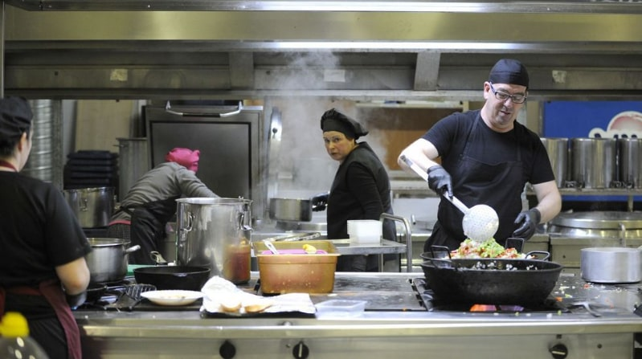

Descripción
Un plato de carne que cautiva a todo el que lo prueba y no es de extrañar. Finos filetes de ternera se cuecen suavemente en una salsa elaborada con setas y verduras que se remata con una picada, tan tradicional de esta cocina, a base de ajo, almendra y perejil. Un manjar de dioses que pide pan, mucho pan con el que rebañar el plato.
Ingredientes para 4 personas
- 500g de filetes de ternera cortados finos
- 2 tomates maduros
- 1 cebolla
- 500ml de agua
- 1 hoja de laurel
- 1 paquetes de senderuelas
- 1 copa de vino blanco
- Aceite de oliva virgen extra
- Harina de trigo
- Sal
- Pimienta negra molida
- 1 diente de ajo
- 1 puñado de almendras tostadas
- 1 manojo de perejil fresco
Tiempo
- Dificultad: Fácil
- Tiempo total: 2h 30m
- Elaboración: 30m
- Cocción: 2h
Elaboración
Empezamos poniendo en remojo las senderuelas en un recipiente con agua tibia. Salpimentamos y enharinamos la carne de ternera. Calentamos aceite de oliva en una sartén y freímos ligeramente los filetes, prácticamente vuelta y vuelta. Los reservamos. En una cacerola doramos la cebolla rallada con un chorrito de aceite, a fuego medio. Añadimos los tomates pelados y rallados, cociéndolo todo, removiéndolo, hasta conseguir un sofrito bien confitado. Añadimos la carne reservada y dejamos que rezume con el sofrito durante un minuto. Agregamos el vino y la hoja de laurel. Dejamos reducir el alcohol. Cubrimos la carne con el agua, añadimos las senderuelas sin el agua y un poco de sal. Dejamos que cueza todo a fuego lento durante una hora u hora y media, aproximadamente. Mientras tanto, preparamos la picada: en el vaso de la batidora trituramos el ajo, las almendras tostadas y el perejil con un poco del agua de cocción. Añadimos la picada a la cacerola y dejamos cocer durante unos minutos más. Rectificar de sal si es necesario.
Con que acompañar el fricandó
Imposible degustar esta receta de fricandó de ternera sin acompañarla de una buena hogaza de pan, pues la salsa pide a gritos ser rebañada. Si lo deseáis, podéis añadir unos dados de patatas fritas como guarnición, o acompañarlo también de arroz blanco.